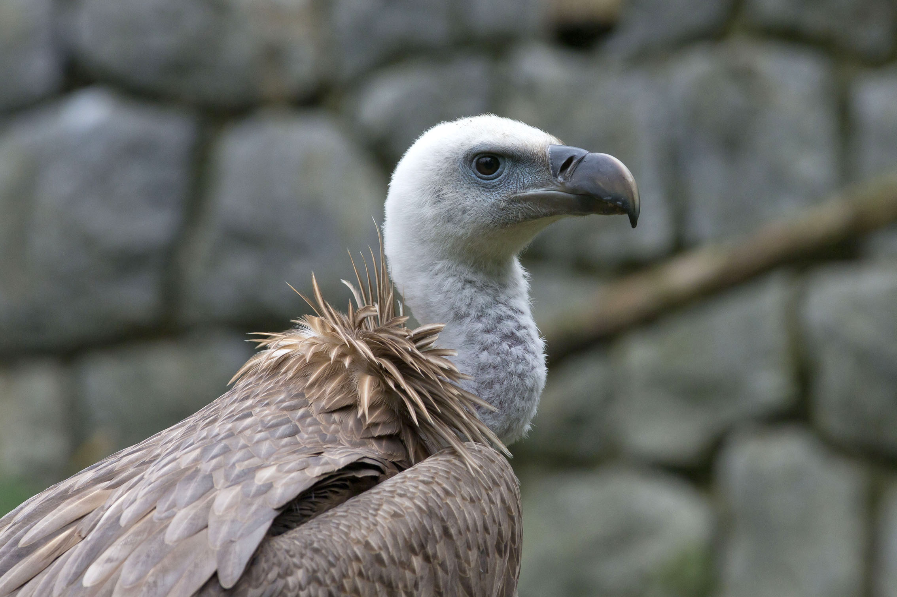

Bjeloglavi sup (lat. Gyps fulvus) je vrsta ptica grabljivica iz porodice jastrebova. Pripada potporodici strvinara starog svijeta (Aegypiinae).
Ptica ima relativno malu glavu koju u letu drži spuštenu prema dolje, vrlo velika krila koja djeluju trokutasto i kratak rep koji izgleda kao da je odrezan. Krila su mu puno šira a rep kraći nego kod kostoberine (Gypaetus barbatus). Mlade ptice su tamnije od odraslih životinja. Odrasli imaju bijelo paperje na glavi i vratu i bjelkast namreškani "okovratnik".

Najviše voli jesti:
- Strvine velikih sisavaca
- Meke dijelove strvine
- Bilo koju uginulu životinju u prirodi
Više o ovoj životinji možete pronaći na Wikipediji